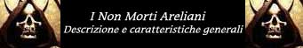
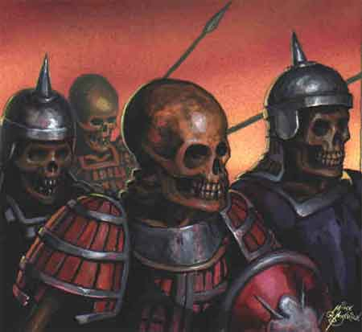

Le seguenti regole cercano di descrivere le caratteristiche comuni alla maggioranza delle creature non morte che popolano Arelia. Le sottostanti regole, quindi, andranno applicate a tutte le creature non morte come regoli generali a meno che non siano previste delle espresse eccezionali deroghe.
Caratteristiche fisiche (l'energia positiva tiene lontani parassiti, microbi ed insetti che avvertono il corpo del non-morto come un luogo ostile).
Insensibilità al dolore e al piacere fisico : I non-morti non provano più dolore e piacere fisico, per questo motivo non subiscono tutti gli effetti che il dolore provoca alle creature (ad es. sono immuni agli effetti di molti incantesimi che causano dolore alla vittima) inoltre, se si tratta di non-morti utenti di magia non perdono la concentrazione quando sono feriti durante il lancio dell'incantesimo (a meno che la botta non sia così forte da impedire loro l'esecuzione della componente somatica, come nell'ipotesi di un colpo critico).
Assenza di metabolismo : I non-morti non hanno più un metabolismo vitale per cui non crescono e non invecchiano, inoltre non hanno bisogno di nutrirsi in via convenzionale con acqua e cibo (esistono però alcuni tipi di non-morti che hanno la necessità di nutrirsi ad es. di cadaveri...). Sono anche immuni all'invecchiamento magico come quello provocato dal tocco di un fantasma.
Non necessaria respirazione : Essendo il corpo dei non-morti non più vitale costoro non hanno la necessità di respirare, la loro voce quando presente è creata dalla modulazione delle onde sonore operata direttamente dall'energia negativa che permea il loro corpo. Si noti che i non morti corporei emettono voci e suoni utilizzando, tramite l'energia negativa, le loro bocche, quindi per poter parlare necessitano della testa. Per questo motivo i non-morti utenti di magia sono in grado di lanciare magie anche in assenza di aria (ad es. sotto l'acqua anche se in questo caso continuano eventualmente ad avere i problemi relativi ai componenti somatici).
Mancanza di affaticamento e rigenerazione : Le creature non-morte non si affaticano, per questo motivo non hanno bisogno di riposare e di dormire. Inoltre non subiscono gli effetti della fatica in combattimento e quelli dovuti all'uso delle magie (ad es. Ray of Fatigue). Al tempo stesso i non-morti non possono riposare (del resto non ne hanno bisogno) ma si considerano sempre in una condizione di non affaticamento, per quanto riguarda il recupero del punti ferita si considera come se fossero sempre in stato di riposo indipendentemente dalle loro attività (si noti che gli è però interdetto il riposo totale), quanto invece ai punti magia costoro recupereranno 2 punti magia all'ora indipendentemente dalle loro attività. Inoltre, tutti i non morti corporei (anche non dotati di rigenerazione) qualora subiscano la mutilazione di un pezzo del corpo possono (se hanno il pezzo tagliato a disposizione) ricollegarlo al loro corpo avvicinandolo e tendendolo attaccato alla zona in cui si dovrebbe trovare per un intero turno (tramite l'energia negativa che ristabilisce il collegamento con la parte tagliata) al termine del quale otterrà la funzionalità dello stesso. Si noti che non morti senza intelligenza (int. 0) non procederanno da soli a questa operazione.
Lentezza nell'apprendimento : Le creature non morte che siano intelligenti e si dedichino allo studio non apprendono alla stessa velocità di un essere vivente. Infatti l'energia negativa se da un lato blocca il loro metabolismo impedendogli di invecchiare nega gli effetti dinamici tipici dell'energia positiva. In termini di gioco quello che un essere vivente può imparare in 8 ore di lavoro (o studio) sarà recepito dal non morto in 24 ore interamente dedicate (del resto non necessitano di riposo per cui possono dedicare interi giorni consecutivi allo studio).
Resistenza alle intemperie ed alle malattie : I non-morti sono insensibili alle variazioni climatiche e al cambiamento della temperatura, possono ad es. camminare senza vesti in una tormenta di neve senza subire alcuna conseguenza. Inoltre non subiscono gli effetti di alcuna malattia colpisca gli esseri viventi anche qualora sia di fonte magica.
Immunità ai colpi critici : Non avendo parti in senso stretto vitali i non-morti non subiscono i normali effetti dei colpi critici né quelli affini di alcune arti di combattimento. I non morti incorporei, infatti, saranno completamente immuni a tutti gli effetti critici. I non morti dotati di un corpo fisico, invece, utilizzeranno la particolare tabella di colpi critici sotto specificata. Tutti i non morti che sono dotati di un corpo fisico possono subire, però, mutilazioni. In tal caso le parti staccate dalla parte principale del corpo o distrutte non potranno essere utilizzate ma il non morto resterà attivo (sempre che abbia punti ferita residui).
|
RISULTATO |
EFFETTO CRITICO - TAGLIO |
EFFETTO CRITICO - PUNTA |
EFFETTO CRITICO - BOTTA |
|
0-30 |
Colpo preciso, l’attaccante riceve un bonus di +3 al dado base delle ferite |
Colpo preciso, l’attaccante riceve un bonus di +4 al dado base delle ferite |
Colpo preciso, l’attaccante riceve un bonus di +2 al dado base delle ferite |
|
31-60 |
Colpo massimizzato, l’attacco provoca il massimo del danno possibile |
Colpo massimizzato, l’attacco provoca il massimo del danno possibile |
Colpo abbattente, la vittima cade a terra per l'impatto knockdown* se non supera un tiro salvezza contro raggio della morte |
|
61-90 |
Penalità di -1 nel round in corso e nel round successivo nonché un malus di +2 all'iniziativa del round successivo |
Penalità di -1 nel round in corso e nel round successivo nonché un malus di +2 all'iniziativa del round successivo |
Penalità di -1 nel round in corso e nel round successivo nonché un malus di +2 all'iniziativa del round successivo |
|
91-120 |
Lacerazione profonda, la vittima subisce danni supplementare pari a un nuovo tiro di dado dell’arma senza modificatori |
Penetrazione superiore, la vittima subisce danni supplementare pari a un nuovo tiro di dado dell’arma senza modificatori |
Impatto pesante, la vittima subisce danni supplementare pari a un nuovo tiro di dado dell’arma senza modificatori |
|
121+ |
Penalità di -2 nel round in corso e nel round successivo nonché un malus di +4 all'iniziativa del round successivo |
Penalità di -2 nel round in corso e nel round successivo nonché un malus di +4 all'iniziativa del round successivo |
Penalità di -2 nel round in corso e nel round successivo nonché un malus di +4 all'iniziativa del round successivo |
*
Knochdown:
Al
tiro salvezza della vittima si applicheranno i seguenti modificatori, +1 se di
taglia Large, +2 se dotata di quattro o più arti inferiori. Le creature di
taglia Huge o Gargantuan e quelle che strisciano sul suolo (come melme e vermi)
sono immuni agli effetti di questo colpo critico.
*
Penalità: La creatura
subisce la penalità prevista ai tiri per colpire, alla classe armatura ed a
tutte le prove di abilità, inoltre la creatura riceve una possibilità pari al
10% * penalità ricevuta di perdere la concentrazione nel lancio delle magie e
nell'uso dei poteri che richiedano la concentrazione.
Assenza di stato comatoso : I non-morti, una volta raggiunti 0 punti ferita muoiono istantaneamente (a meno che non sia prevista per loro una regola speciale come per i vampiri) senza che possa applicarsi a costoro la regola del coma da 0 a -9 punti ferita.
Impossibilità di procreazione : I non-morti non sono in grado di procreare nuove creature viventi anche qualora i loro organi riproduttivi sono in grado di funzionare (ad es. nei vampiri). Occorre rammentare che alcuni non-morti però sono in grado di creare nuovi undead spesso uccidendo le creature viventi.
Perdita delle caratteristiche viventi : I non-morti perdono le caratteristiche fisiche e magiche che avevano come creature viventi (ad es. le ghiandole velenifere di una vipera zombie non produrranno più veleno, i ragni non produrranno più ragnatele, i folletti zombies non saranno più in grado di divenire invisibili).
Inversione energetica : A differenza delle creature viventi i non-morti subiscono danni dall'esposizione diretta a fonti di energia positiva e sono rinvigoriti da quella negativa.
Intolleranza all'energia positiva : Tutti i non-morti sono intolleranti nei confronti dell'energia positiva, siccome gli esseri viventi sono catalizzatori di questa energia (le forme animali in particolare) tutti i non-morti hanno una naturale tendenza a eliminare la vita in queste creature (alla morte l'energia positiva si dissolve). Per questo motivo gli undead senza intelligenza sono cmq. molto aggressivi nei confronti degli esseri viventi, quelli intelligenti sebbene subiscano il fastidio dalla vicinanza degli esseri viventi possono dominare tale impulso.
Immunità al risucchio di energia vitale : Tutti i non-morti sono immuni al risucchio di energia vitale (energy drain) come ad esempio quello provocato dal tocco di uno spettro, sia che questo risucchio provochi perdita di livelli che di altre caratteristiche o punti ferita.
Sensi della non vita : I non morti comunemente perdono i loro sensi che avevo in vita che sono sostituiti dai sensi dell'energia negativa. I sensi dell'energia negativa sono solo due : Vista, un non morto vede sempre come un umano medio di giorno indipendentemente dalla luce presente, la sua vista però è in bianco e nero e non riesce a distinguere i colori, il campo visivo e il punto di partenza della vista sono quelli che aveva in vita (uno scheletro di un uomo senza teschio ha il campo visivo di un uomo e la vista parte dal punto in cui si sarebbe trovata la sua testa). Udito, l'udito di un non morto è equiparabile a quello di un umano medio e il suo punto di partenza è quello che aveva in vita. Comunemente quindi i non morti perdono gli altri sensi, non sono in grado di sentire sapori, odori e di distinguere al tatto corpi caldi e freddi.
Immunità mentali : Poiché la mente dei non morti è ormai devitalizzata ed è sostituita da un ammasso di energia negativa che compensa la perdita della vitalità del cervello costoro non sono influenzati dalle magie mentali non studiate appositamente per loro (ad es. sono immuni a charm, hold person, ecc...) e non sono soggetti alle illusioni che non siano studiate specificamente per illudere i flussi di energia negativa come Invisibility to Undead.
Immunità ai veleni e alla paralisi : I non-morti sono immuni a tutti gli effetti dei veleni e alle forme di paralisi che incidono sui tessuti biologici delle creature viventi.
Resistenza al freddo : I non morti non soffrono il freddo. Per tale motivo, i non morti incorporei sono totalmente immuni ai danni da freddo, sia di origine magica che naturale; i non morti corporei, invece, possono essere danneggiati dal freddo particolarmente intenso. Costoro assorbono i primi 3 danni da freddo subiti per poi ridurre la restante parte dei danno da freddo subendone solo la metà (per difetto).
Sensibilità al sacro : I non morti sono sensibili agli oggetti sacri e ai riti delle divinità della Fratellanza della Luce che utilizzano potere infuso di energia negativa, per questo motivo molti chierici di queste divinità sono in grado di scacciarli, inoltre il contatto con il contenuto di una boccetta di acqua santa della Fratellanza della Luce provoca a costoro 2d4 danni ustionando i loro tessuti non viventi.